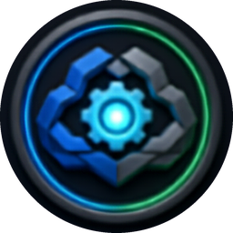

What I built with my Grok Bot seat
Grok drafts the ticket notes.
I press Send.
A tour of how I use Grok Bot for my S1 Technology work: the daily ticket workflow, documentation, scripting, and what carries into the enclave. You can try the scripts right on this page.
 SENTRY
SENTRY
REMY PATCH
PATCH NETTY
NETTY RADAR
RADAR DELTA
DELTAWhy there's no enclave demo today
The seat was planned around a GCC High enclave. That enclave isn't running yet, so I put the seat to work on the job I have now.
The seat
Came with my move into CMMC work. The plan was built around a GCC High enclave.
The status
The enclave isn't up and running yet, so there's nothing to demo inside it.
The approach
Put it to work on today's job, and use the time to get ready.
CMMC = Cybersecurity Maturity Model Certification, Level 2 · GCC High = Microsoft Government Community Cloud High
One bot per job
Each bot gets one job and only the access that job needs. DELTA leads and hands work to the others.
Same rules for every bot
- Every message is a draft. Nothing goes out without me.
- Read-only in ConnectWise, the RMM, and MTX.
- Never holds credentials, client data, or CUI.
- Least privilege: only the access its job needs.
Share of usage, Oct 21 – Nov 20
REMY and SENTRY are low for one reason: the enclave isn't running yet.
MSP = managed service provider · M365 = Microsoft 365 · CISA KEV = Cybersecurity and Infrastructure Security Agency Known Exploited Vulnerabilities · CCA = Certified CMMC Assessor · RMM = remote monitoring and management tool · CUI = Controlled Unclassified Information
Tickets and time, drafted for me
When I start a ticket, the clock starts. By the time I'm done, the note and time entry are waiting for my approval.
Ticket starts
DELTA starts a clock.
Phone call
CHRONO pulls the call time from RingCentral.
Draft ready
Note and time entry, using my rules.
I approve
Then PATCH posts it.
Email-only work
Call work
Connected time + 10 min wrap-up
Reply alert
Every 30 min
Weekdays, only when someone's waiting
Time saved per week
[JOSHUA: measured number]
Also built: morning board, email triage, meeting prep, and end-of-day wrap. Built, used, then paused to keep usage down. They run on demand.
The end-of-shift report
Grok reads the ticket board through a read-only API and builds the CMMC End of Shift Report, a Microsoft List the pod checks at shift change.
Read-only access
Grok can see the ticket board. It can't change it.
End of every shift
Grok builds the report on its own.
One list for the pod
High-priority tickets stay tracked. Maintenance finishes within the requested or set window.
| Section | Ticket Number | Vendor Name | Description | Maintenance Window | Personnel Assigned | Est Completion Time | Status |
|---|---|---|---|---|---|---|---|
| P1 | High-priority tickets | ||||||
| P2 | High-priority tickets | ||||||
| Pod Maintenance | Maintenance the pod runs | ||||||
| Vendor Maintenance | Maintenance a vendor runs | ||||||
API = application programming interface · P1 / P2 = Priority 1 / Priority 2
IT Glue documentation
PATCH drafted onboarding docs for my assigned clients, one client at a time, on read-only access.
Example first
Found an existing record and showed me before touching anything.
One client at a time
Read-only access. Nothing crosses between clients.
Styling check
Using the skill from Hunter's team library.
I publish
I bring every draft in myself.
Try the scripts
These are the PowerShell scripts I use on S1 tickets, built with Grok and refined over several versions. Pick one, choose dry run or full run, and press Run to watch what it does step by step.
AD Connect delta sync
The one-liner I run after directory changes.
Start-ADSyncSyncCycle -PolicyType Delta
M365 = Microsoft 365 · OST / NST = Outlook offline data files · MDM = Mobile Device Management · AD = Active Directory · WAM = Web Account Manager
FortiGate training
Start with the hands-on lab I built, then go deeper with Fortinet's official training and the reference articles we use when a FortiGate-to-Azure tunnel comes up on a ticket.
Talvex Firewall Lab
My FortiGate-style training lab. Practice firewall work in the browser with guided missions.
Official Fortinet training
FortiGate + Azure site-to-site VPN
VPN = virtual private network · BGP = Border Gateway Protocol · VNet = Azure virtual network · IPsec = Internet Protocol Security · DPD = Dead Peer Detection
The CMMC Level 2 Enclave Toolkit
Every tool that goes into an enclave holding CUI has to be judged the same way, with evidence. This template does that, and it's vendor-neutral: no picks, no pricing, just evidence.
Define the CUI boundary
Evaluate each tool
Map to NIST 800-171 families
Record decision and evidence
Feed the System Security Plan (SSP)
Vendor-neutral
No picks, no pricing. Just the evidence an assessor will ask for.
What carries into the enclave
| Area | What carries over |
|---|---|
| Maintenance | Ticket clock, time rules, SENTRY's maintenance board |
| Documentation | The IT Glue pattern: example first, draft, a person publishes |
| Tool decisions | The enclave toolkit, mapped to NIST SP 800-171 |
| Inside the boundary | AI helps build small tools. The tools run inside. CUI never leaves. |
Next: timing one control family end to end, for real numbers. Due [JOSHUA: date]
CUI = Controlled Unclassified Information · NIST SP = National Institute of Standards and Technology Special Publication · AI = artificial intelligence